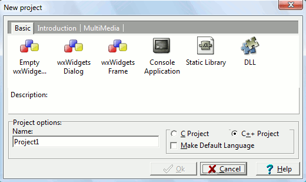

Projects are the way you manage
different source files and
compiler/linker options inside wxDev-C++. It's an ini file (usually
ending in the .dev
extension), which specifies what source files should be included in
your program and what compiler/linker parameters/switches you want to
use to build them.
When to use wxDev-C++ Projects ?
(Answer: [Almost] Always)
You have
more than one source file - Using Projects ensures
that all of your source files are linked to the executable
after they are compiled.
You need to
create a DLL
or static library, or want to use resource files in your
program - Projects allow you to specify the
compiler and linker options necessary
How can I create a wxDev-C++ Project ?
Go to the File menu and click on New,
then Project. A dialog opens,
containing different Project types.

Here are the basic Dev-C++ project types :
Console
application : creates a console (command-line shell)
program
Static library
: creates an empty project with the options needed for building a
static library
DLL
: creates a Win32 Dynamic Link Library
In addition, wxDev-C++ contains three wxWidgets (GUI) project types:
Empty
wxWidgets project
- A project that initially contains no source files but has the correct
compiler and linker settings to build wxWidgets source code.
wxWidgets
Dialog - A project that contains skeleton source
files for a wxDialog
wxWidgets
Frame - A project that contains skeleton source files for
a wxFrame
Now that you selected your project type, fill the name of your project
in the corresponding edit box, select the programming language you will
be using (C
or C++), and click on OK.